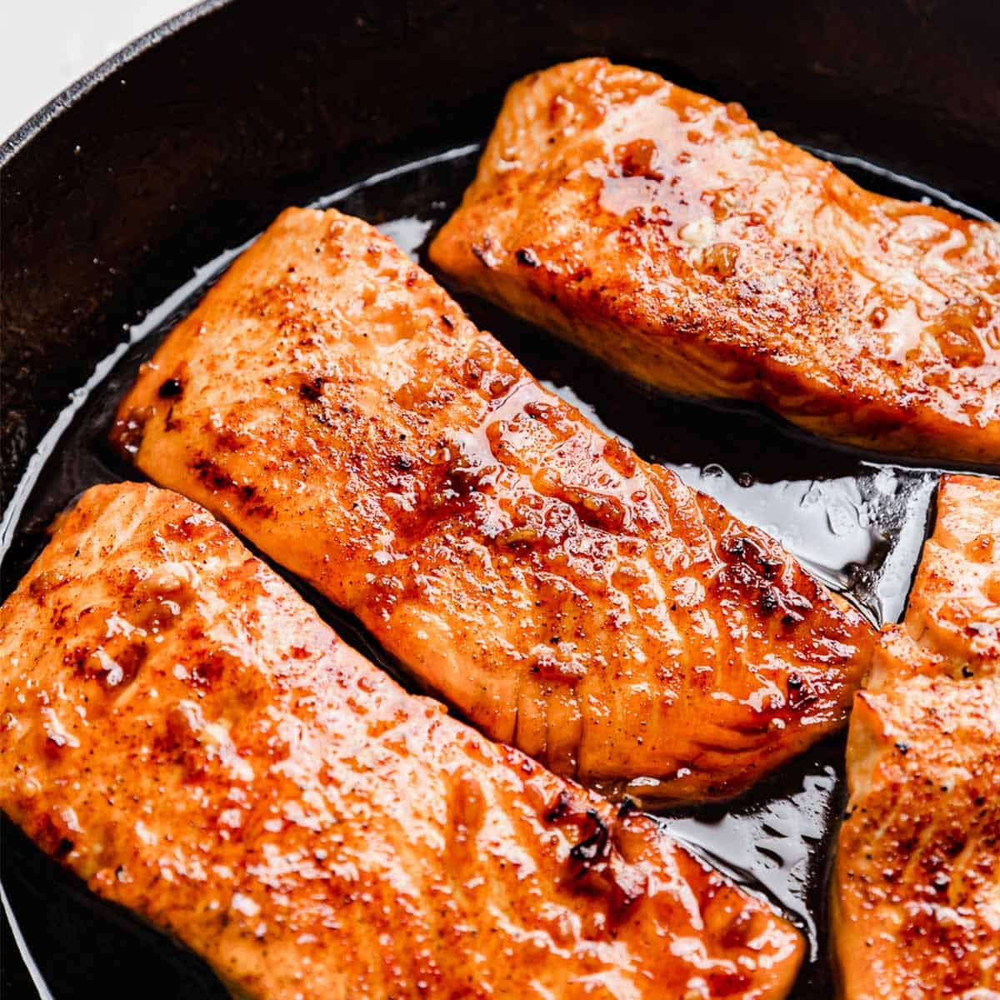

Healthy Recipes that Don't Taste like Dirt
Everyone knows that a healthy diet is the key to longevity and wellness, but not many of us know what exactly we should eat throughout the day in order to keep us energized and strong. Well fear not because this site is dedicated to giving you some great and flavorful recipes that will make you question if it's really even healthy
Breakfast
Everyone knows that breakfast is the most important meal of the day, so it's pivotal that you have something nutritious to supply you with the right energy for the day's tasks. Listed below are some of my personal favourites that are a staple in my diet
Egg Omellette
An omelette with a generous side of salad is a nutritious breakfast that almost never gets stale and repetitive due to it's versatility.
Ingredients required
- 3 large eggs
- Olive Oil
- Brocoli
- Italian Seasoning
- Paprika (smoked paprika is also good)
Instructions
- Crack the eggs in a bowl with water and wisk it until runny. You should also put in your spices into the bowl and whisk away to incorporate all the flavours
- In a skillet, pour some olive oil and heat he pan to medium-low heat. Then, cook whatever toppings you'd like (in this case, it's brocoli) until satisfactory
- With the cooked toppings still in the pan, pour your whisked eggs in the pan and try to spread them around as much as possible to cover the entire surface of the pan.
- Cook the eggs for about 3-4 minutes on medium-low heat. Make sure to give the skillet small shakes back and forth every half a minute to ensure hat the omelette doesn't stick to the pan. (PRO TIP: For a fluffy omelette, place a lid on top of the pan while the eggs are cooking)
- Remove from heat and try to fold the omelette in half using a spatula. Serve on a plate and enjoy
Lunch
Tandoori Chicken

A personal favourite of mine due to the ridiculous burst of flavour and heartiness of the meal. Best of all, it's super simple to make yourself and could be modified to better fit with your preferences
Ingredients required
- Chicken thighs or breast
- Greek Yogurt
- Lemon Juice
- Vegetable or Canola Oil
- Fresh Garlic
- Onion Powder
- Tandoori Masala (go for the Kissan brand)
Instructions
- Wash each of your chicken thighs/breasts and score them. Place them in a large baking pan when cleaned.
- Coat each of the chicken pieces with vegetable/canola oil and season the chicken with a generous amount of tandoori masala, onion powder, salt, and pepper
- Rub the seasoning all over the chicken until the color of the flesh becomes a dark red. If you're someone that loves the skin, remember to rub the seasoning underneath the skin too so you don't end up with flavourless chicken.
- Using half a lemon, squeeze all of it's lemon juice over the chicken and mix it with 3 spoons of greek yogurt. Again, make sure to mix everything up.
- Marinade the chicken in the fridge for atleast an hour before cooking. The yogurt and lemon juice will work wonders in infusing the meat with the flavours of the seasoning while making it very tender
- Heat the oven to 400 degrees fahrenheit and cook the chicken for about an hour.
- Serve the chicken up with a plate of rice or a side of salad. It's also recommended to baste the cooked chicken with a little bit of the oil in the baking pan to greatly enhance the flavour.
Dinner
Sweet and Sour Salmon

Everyone knows that salmon is about as good as you can get when it comes to sea food, and what better way to end the day with a splendid dish of some sweet and sour salmon fillet. Like all the other recipes so far, this one is also really easy to do and doesn't require much ingredients
Ingredients Required
- Salmon Fillet
- Fresh Garlic and Garlic Powder
- Paprika
- Olive oil
- Soy sauce (reduced sodium preferred)
- Brown sugar
- Lemon juice
- In a bowl, add your soy sauce, lemon juice and brown sugar and give it a mix. Taste test it to make sure that it isn't too sweet or sour and if so, add more brown sugar or lemon juice to counteract it.
- If not done already, wash and cut your salmon fillet into three even pieces.
- give each salmon piece a dry rub of your seasoning mix of paprika, garlic powder, salt, and pepper
- Lightly coat a skillet with olive oil and heat it up to medium-low heat. When hot enough, put your salmon in the skillet skin side up first. Let it cook for 3 minutes and then flip the fillets on the skin side and let that cook for another 3 minutes.
- Add chopped fresh garlic o the skillet along with your sauce mix and let it simmer with the salmon. Use a spoon to continously pour the sauce on eah of the salmon fillets until adequately coathed.
- EXTRA STEP: If you plan on having some rice with your salmon, it would be best to place your cooked rice in the same pan just used to cook your salmon, add some water, and heat it up while mixing it. This gives your rice the leftover flavour of the salmon and is genuinely way better than just having plain rice